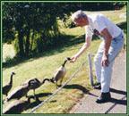

|
CLICK
|
 |
to close this page.
|
SPECIAL ANECDOTES ABOUT FRED
WHITE ROCK'S "UN"OFFICIAL GOOSE HERDER.
This ad was placed in the Birth Announcement Section of
The Peace Arch News, White Rock, BC, May 2000:
"White Rock Square One is pleased to announce
the arrival of seven goslings. Parents and babies are doing well."
We do not know who placed the ad in the paper, but we do live in the condo building called "White Rock Square One." Using his binoculars, Fred would go onto the roof of the building and watch Father Gander and Mother Goose on their nest, which was built on the section of the roof where people are not supposed to walk. However, one day a gosling fell from the roof, so an onlooker summoned the SPCA. They proceeded to net the remaining goslings and tossed them off the roof to the ground. One of the goslings was injured. At the back of our condo is a mini-park, and that is where the goslings ended up. Fred thought the park was too dangerous for the little ones - a lot of people go through it; there are dogs around; irresponsible youth often frequent the park. So he went to the roof and chased Mama and Papa down to join their family. He then proceeded to "herd" the family to another park-like setting, approximately four short blocks away. If you do not know White Rock, the condo is located in the heart of the business section. Because we are on a T street, we do not have too much traffic going to the main avenue of the City, nearly two blocks away.
Fred directed the feathered family - Mother Goose led the way, followed by the seven goslings, with Father Gander in the rear. Whenever the geese wanted to veer in another direction, Fred would call out, "No, don't go there." And the geese obeyed! They crossed our less-busy T street and plodded through a block-long parking lot. They then had to cross the very busy street of 16th Avenue. Fred rose to the occasion. With much hand-gesturing, he stopped the traffic in both directions, and to the amazement and delight of the car drivers, the feathered family waddled across the street with Fred's ever-encouraging words. The injured gosling was limping badly, but when Fred tried to pick it up, the protective gander flew at him and hissed. About half-way down the block, the outskirts of the tiny park came in sight - that is, the heavily wooded section. Fred said, "No, you can't go in there." Once again, the geese obeyed. A little farther down, the open space of the park appeared, where there are several man-made, reed-ringed ponds.
"Okay - go for it," Fred announced to his feathered friends. And the geese obeyed. When they saw the water, that was "heaven" to them. Mission accomplished, Fred came home feeling very elated about his newest retirement hobby. He went back every day to check on his friends, and Mother Goose ate rolled oats from his hand. The Gander remained more reserved. However, the injured gosling disappeared within a few days, doubtless the victim of a predator. I reported the story to the Peace Arch News, and a staff reporter interviewed Fred on the telephone. On May 17, the reporter in his own words told the story under the headline: GREENER PASTURE FOUND FOR WHITE ROCK GAGGLE. The article was a refreshing change from the usual murder and mayhem stories found in newspapers nowadays.
But here is my personal comment as to why Fred handled the "goose" incident so admirably. (This was not published in the article.) You see, when Fred and I were on really good terms with each other, I called him in German, "Du alter esel." (You old donkey!) He reciprocated by calling me, "Du Dumme Gans." (You dumb goose.) He had 58 years of marriage with a "dumme gans" and so no wonder he was an expert at "herding" geese around.
Each year the geese have returned to build their nest on one of the condo buildings in our area. They evidently remembered Fred, for they fluttered across the street or off the building to partake of the delicious rolled oats he had for them. They went on their own, by now, to the little park. If other people were in the park, the geese ignored them and would run to Fred. One of our condo residents – Les Mellish – penned the following from the viewpoint of the geese.
Over the wall And off the roof
We need a place much grander.
We met such a kind man, Who said we had to pray,
Then up the street And past the bank,
We nearly stopped a Brinks van.
We must have been a sight All down the avenue
Nine of us and Fred shooing here, shooing there,
The traffic was a fright.
Then we saw some water, Flowers, grass, and ducks.
We soon left Fred behind Thankful we'd arrived.
Blissfully drifting on the lake, We think we heard Fred's laughter.
Speaking to a clergyman, a friend said, "You're lucky. You've got the Bible to back you up when it comes to having a submissive wife." The clergyman replied in a sad tone: "Well, even if the Bible says I am to be the Commander-in-Chief, my wife has created another position: Demander-in-Chief." One day, Granny sweetly invited Grandpa to have a friendly heart-to-heart talk. From years of experience, Grandpa's radar assumed full alert, and he expectantly awaited the frontal attack. Seeking to disarm him, Granny's bewitching brown eyes sparkled, her lips formed a mischievous smile, and she assumed an attitude of humility (a difficult act for one who is egocentric). "Grandpa," she purred, "am I a congenial person?" Momentarily perplexed at such a question, Grandpa muttered, "Why, of course. I married you, didn't I?" More questions were hurled at Grandpa.
"Do you consider me to be a good Christian example?"
"Do you see me as one who is hospitable and friendly?"
"Yes, yes, yes," he replied emphatically. (He is thinking, however, Where is Granny leading me? I think she is trying to paint me into a corner.) The next question stunned Grandpa, and he desperately groped for a diplomatic answer. Like a lawyer, Granny pressed for a plain "yes" or "no" response. "Do you think I have any faults?" Grandpa cleared his throat a few times. He began his reply with "ums," "ahs," and "ers." Finally, he gave up in despair. Trying to maintain a kind voice, he stammered, "Um, er, yes, you do have a few faults …."
The moment of attack had arrived. Granny's eyes gleamed with victory as she dropped her verbal bomb: "I've figured out that you have been my preacher for at least thirty years. If your preaching was that good, how come I still have so many faults?" Grandpa groaned audibly at Granny's logic - or lack of it. With a loud chuckle, she leaned towards her adored preacher and affectionately ruffled his hair. "You are my favourite preacher, and I love you," she gently murmured. For the moment, Granny's imperfections were overlooked.
Granny and Grandpa worked as a team in their years of active ministry. They served churches with memberships as low as fifty and as high as three hundred. Granny helped with Grandpa's ministry by teaching Sunday School, establishing children's clubs, accompanying him in visitation, handling all his secretarial work, typing the church bulletins and reports, and entertaining. When Grandpa preached, Granny maintained a neutral look on her face, lest he read something into the situation which was far removed from fact. At their first church, the congregation was from a German ethnic background. A film was being shown, and in the intermission, Grandpa announced that they would now "lift" the evening offering - a literal translation from the German language. To Granny's English-only ears, however, "lift" also meant "steal." From her corner of the room, she started to grin from ear to ear. Grandpa noticed her hilarity and reasoned, There must be something wrong with me. Perhaps my hair is standing on end. So he patted his hair down as the ushers went about their duty. More suppressed laughter from Granny. Is it my tie? Grandpa then straightened his tie. What? Granny is still laughing? He looked down at his suit coat. It's buttoned okay. Finally, he shot a horrid look at Granny; too late, she was now beyond pious decorum. Fortunately, the lights went out for the last half of the film, thus giving Granny the opportunity to "smarten" up. That is why Granny never twitched an eyelash when Grandpa preached. Never again would Grandpa have to second guess Granny's facial expressions.
loved and cared for each member and adherent in his church.
A PASTOR'S HEART
A well spoken message stirs a heart to rejoice
There is nothing like a strong, resilient voice,
But when sorrow comes, there is no better gift to impart
Than the gift of a caring, pastor's heart.
Lord, bless this pastor
In each new day,
Bless his ministry along the way.
For fame and fortune can never impart
The precious gift of a caring pastor's heart.
Just a servant of Christ
And at times a dear friend,
With a desire to love God
To the very end;
Tending his flock in the Savior's way
Is the gift of a pastor's heart.
Striving to live
as an apostle of Christ,
Serving his Father giving godly advice!
Preaching and teaching and sharing the Word
Is the gift of a caring pastor's heart.
(Sandra L. Adams, Copyright 2000)
|
CLICK
|
|
to close this page.
|